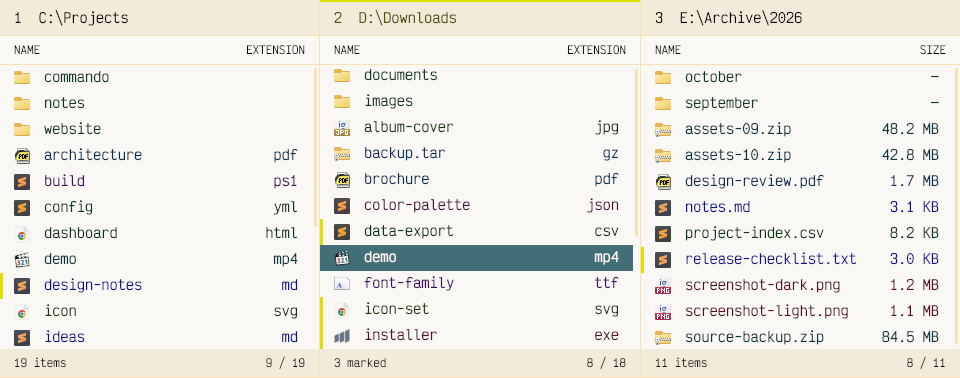

The file terminal for power users with mouse issues.
Commando is a multi-panel file manager for Windows, with obsessive keyboard support, shortcuts you can actually discover, and a workspace you can make your own.
Download
Latest ZIP
Source code
on GitHub

01 / Highlights / Multi-panel
One panel or many.
Open several folders side by side, each with its own selection, marks, and view.
02 / Highlights / Themes
Deep customization, made easy.
Generate new palettes effortlessly, from quiet neutrals to unapologetic neon vibes.
03 / Highlights / Keyboard
Designed for keyboard control.
Navigation, selection, filtering, and file operations all work from the keyboard.
04 / Features
Many features, one command palette.
The same commands and settings you can find inside Commando.
No matching features. Try another term.